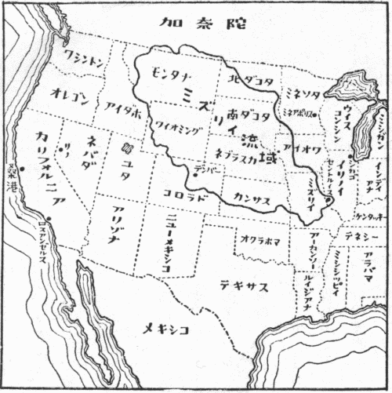

アメリカの地図を頭に浮べてみよう。太平洋岸の太陽と水とに恵まれた細長い地域、即ちカリフォルニア州の一部は、大部分の土地が、一年二毛作、作物によっては三毛作も可能といわれる地上の楽園である。
しかし一旦ネバダ山脈を越し、太平洋の水域を離れると、急に荒涼たる沙漠地帯にはいる。ネバダ州、ユタ州から南方にかけての諸州は、大部分の土地が恐しい沙漠であって、わずかに緑の土地があっても、それも半沙漠地帯である。
一面に高台の盆地になっていて、ロッキー山脈がその東側の境をなしている。盆地といっても、その一部であるネバダ州が、現在の日本の全面積よりわずかばかり狭いくらいであるから、その広さが想像されるであろう。
ロッキーを越すと、大西洋の水域に入る。即ちロッキー山系の東側から流れ出る水は、もはや沙漠の中で消えることはない。それは日本などでは想像の出来ない長い流路をとって、けっきょく大西洋に入る。しかしその最初の地域、即ちモンタナ州からコロラド州にかけて、土地は高く、水利は少なく、けっきょく高地性の半沙漠地域をなしている。コロラドの首都デンバー市の標高は、一マイルあるので、「一マイル
これらの州から、その東側の諸州にかけて、即ちミズリイ河の流域になっている広茫たる地域は、みなこの半沙漠的な気候の土地である。土地が高いために、冬の間は降雪があり、あるいは土地が凍るので、耕作は出来ない。しかし夏は日射が非常に強く、その上夏中降雨量が極めて少ない。毎日毎日やきつけるような太陽が、この乾燥し切った土地に照り映えている。土質はあまり良くないが、太陽には恵まれているので、水さえ十分にあれば、この地域はかなり豊饒な耕作地となり得る。
アメリカの農業は、いうまでもなく、ほとんど全部畑作である。そして灌漑による畑作が、これらの半沙漠的な地域を、極めて豊かな耕地にしているのである。前にカリフォルニア州は、水と太陽とに恵まれているといったが、実はカリフォルニア州の大部分も、この畑灌漑によって初めてその天恵を十分に利用しているのである。
灌漑による畑作は、主として蔬菜について行なわれている。小麦やとうもろこしのようないわゆる主食の場合は、作付面積が広いので、完全な灌漑はとても出来ない。これらの主食は、たいていは二千エーカー程度（一エーカーは約四反余）というとんでもない広い地域に作付されている。そして耕土、作付、除草、収穫と、全農業過程が、機械によって処理されている。
畑作灌漑というのは、畑の畝を少し高くして、畝と畝との間に水を流すのである。従って畑は完全に平らである。そういう水面のように平らな畑を、数千エーカーの土地について求めることはもちろん出来ない。それで主食は今日でも、まだ粗放な乾燥農業をしている。

半沙漠地帯における乾燥農業は、急激に地力を消耗させる。それでコロラド州などでは、全面積を二分して、半分だけに作付をして、残りの半分を一年間休ませているところが多い。よく行なわれている方法は、小麦に牧草を混播し、麦を苅ったあとこの牧草をのばす方法である。牧草は翌年はそのままにしておいて、飼糧をとり、二年目の春掘り起して緑肥にする。そしてまた麦と牧草とを混播する。麦から見れば二年一毛作である。日本ではちょっと考えられないことであるが、このようにして、ようやく地力を保持しているのである。
日本人のような勤勉な農家にとっては、灌漑による蔬菜栽培が、経営上有利である。それでコロラド州の日本人農家は、この灌漑畑作をしているのが、大多数だということである。
灌漑溝と水利権とは、畑についていて、それが畑の値段をきめる主な要素になっている。たいていは湖のような大きい貯水池をもっていて、普段は川から直接に水を取っているが、渇水期には、この貯水池から取る。当然なことではあるが、それがちゃんと出来ている点がいい。
ところで、畑の畝間にそれを引くとすると、前にもいったように、畑の勾配が、正確に一定になっている必要がある。そして上手の畑のふちに沿って、灌漑溝の分岐溝を作っておく。この分岐溝は、たいていは一インチ厚くらいの木の板で作り、平生は水を通しておかない。幅は一尺五寸くらい、深さも大体その程度である。二日か三日に一回、この分岐溝へ灌漑溝から水を引いて、畝間の溝の一本一本に水を入れる。畑の畝は分岐溝に直角になっていて、真直に二町か三町くらい続いている。一枚の畑は、幅が四十間から五十間くらい、長さが二町から三町あって、縦にずっと
畝間の距離、即ち畝幅が問題であるが、日本のように畝幅が一尺とか一尺二寸とかいうのでは、その間に水を引くことはむつかしい。ここではたいていの作物、トマトとかレタスとか胡瓜とかいうものは、畝幅が四フィート（ほぼ四尺）になっていて、株間も四フィートというのがきまりのようである。
畝幅四フィートのうち、三フィートくらいが畝で、畝間の溝が一フィートくらいある。その幅一フィートの溝に、上手からどんどん水を入れてやると、水は真直な線になって、畑の向う側まで流れる。長さ二町ないし三町の細い水の線が、一枚の畑一杯に七十本八十本と並んで、真直に流れている様子は、実に美事である。普通は三、四時間水を流すと、畝の下まですっかり水が浸みるので、水門をとじることにしている。
分岐溝からこの畝間の溝に一定量の水を入れるのは、非常にむつかしい。というのは、流入量を正確に一定にして、畑に浸みる水の量だけ、あるいはそれよりほんの少し多い量だけを、流し入れてやらなければならないからである。つい近年までは、畝間の溝一本一本毎に分岐溝から狭い水の取入口を作っていたが、ちょっとでも水が多く流れ込むと、畑の中であふれ、畝がこわされてしまう。それでその見張りが非常に辛い仕事であった。
ところが二、三年前から、分岐溝からサイフォンで水を入れるようになって、仕事が非常に簡単になった。合成樹脂で作った直径一インチくらいの曲った管を、サイフォンに使うのである。管には直径一インチ半、二インチ、二インチ半といろいろの太さのものがあって、畑によって、適当な太さのものを使う。サイフォンならば、流れ入る水の量は、放っておいても一定になるので、実に便利である。
誰が考えてもすぐ気のつくこのサイフォン法を、つい一昨年頃まで誰も使わず、長い間要らない苦労をしていたというのは、ちょっと面白い話である。アメリカくらい科学と工業との発達した国でも、こういう小さい改良というものは、今でもあるのである。
デンバー市の近くに、ロングモントという村がある。そこに日本から渡って四十年苦心経営の末、今では三百二十エーカー（百五十町歩近い）の農場をもっている前田菊太郎氏という人が住んでいる。その農場を訪れて、二晩泊りでコロラド農業を見せてもらった。そしていろいろ北海道農業などに対して参考になることを、たくさん教った。
この附近は晩霜が五月、初霜が九月末、作付期間は四か月半くらいで、気候条件は北海道とよく似ている。もちろん一毛作しか出来ない。冬は土地がひどく凍り、土質がまた少しも良くない。粘土分の多い白茶けた土で、乾くといわゆる盤になって、まるで石のように固くなる土である。半沙漠地帯だから、それは当然のことである。
そういう不利な条件の下で、前田氏の農場経営は立派に成功している。畑灌漑によって主として蔬菜類を作っているので、採算上非常に有利である。主食は作らず、玉葱、トマト、胡瓜、キャベツ、レタス、セロリ、種子用ビール麦などを栽培しているのである。
ところで日本の農業の知識では、この農場の経営はちょっと理解出来ない。というのは、蔬菜は非常に手のかかるもので、夜昼通して蟻のように働く日本の篤農家でも、蔬菜を一町歩も作ることは、まず困難である。蔬菜類は非常に人手を要するからである。アメリカのような人件費の高いところでは、人をたくさん雇っては経営が出来ない。それで百五十町歩近い蔬菜栽培が、どういう風にして経営されているかというのは、非常に面白い問題である。
結論を先にいえば、それは機械化の徹底と、何よりも前田氏及びその家族の勤勉さの結果ということが出来るであろう。日本的篤農精神が巧く機械化と融合すると、こういう結果が生まれ出るのである。現在は八台のトラクター、四台のトラックを使って耕作している。男の子は四人、そのうち二人は既に大学を出て、それぞれ立派に独立している。家には一マイルの私設鉄管で水道を引き、水洗便所と常時温湯の施設とがしてある。
どうしてそういう経営が出来るかというに、まず人手の問題が第一である。驚いたことには、百五十町歩近い蔬菜栽培という難事業が、主として家族の労働力と、親類の人一人の援助だけで経営されている。家族は前田氏夫妻の外に、男の子が二人、女の子が三人である。娘さんたちは、学校がすむと、自動車で家へ帰り、着物を着かえて農場に出る。そして暗くなるまで、真黒になって働くのである。
こういうとすぐ「封建的な親」という非難が出るかもしれないが、アメリカでは親を助けて働くことは、封建的ということになっていない。この子供たちは、いわゆる二世で、純粋な米国人なのである。日本語も少しは分るが、初めからアメリカ人としての教育を受けているので、日常生活は全部英語である。家庭でも英語でないと話が通じない。もっとも親は英語を聞く方は分るが、話す方は片言くらいしか喋れない。子供はその反対である。それで親子の会話は、親が日本語を話して子供が英語で答えるという、きわめて妙なものである。そういう親子の間でも、子供はよく親の言い付けをきいて、また実によく働く。しかし働くだけ働いたあとには、思い切って愉快に遊ぶ。これは何もこの家庭だけの話でなく、アメリカ人一般の生活様式である。私の泊った日も、野球の試合があるというので、娘たちは早めに農場を切り上げ、シャワーをとり、服を外出着に着替え、爪に化粧をして、颯爽とビュイックの高級車で出かけて行った。
野良着を着て胡瓜をもいでいた時の姿は、北海道の農家の娘とちっとも違っていなかった。
もっともこれだけの家内労働力だけでは、やはり足りない。それでメキシコ系の米人を五家族入れている。小さい家を作ってやって、家賃と水道と電気だけは前田氏がもってやる。この人たちは能率が上らないので、賃金も安い。大工などとくらべると、五分の一くらいの賃金で喜んで働くようである。たいていは耕作期間だけの作男で、時間給になっている。秋になると南の方へ仕事を探して行ってしまう。
この日傭労働者たちでも、自動車をもっていて、それに家族と全財産とを積んで流れ歩いている。農場の片隅に黒い箱型のシボレーがあって、その前でメキシカンの子供たちが遊んでいた。こういう連中まで自動車を持っているのには驚いたが、よく考えてみると、自動車がなくては生きて行けないような社会組織になっているのである。一つの農場の仕事がすんで、次の仕事を探して流れて行く時に、汽車で帰るだけの金は持っていない。従ってどうしても自動車が要る。もっとも中古品で、しかも月賦で買ったものである。
この地方は、夏の日射は十分なので、北海道のように、春先の作付に一日を争うということは、要らないように思われた。ところがここでも電気温床を使い、畑の一部では移植栽培をしていた。たいへんな労力なのであるが、無理のない話である。というのは、収穫日を非常に急ぐからである。それは値段の関係であって、胡瓜などは一週間前は一籠五ドルだったのに、今日は二ドル半に下ったという調子である。それで非常な無理をして、一日でも早く穫るように、作付を急ぐのである。私たちが北海道でやっている電気温床や、凍土処理の研究の話をしたところ、非常に興味をもって聴いていた。
前田氏の感心なことは、地力培養に非常に熱心なことで、特に地力の減ったところへは、毎年反当り四トンもの堆肥を入れているそうである。そして牧草のアルハハを、五年目毎くらいに、ちゃんと入れて、地力の向上を図っている。要するに、土を愛する農家が最後の勝利者であるというのは、今日のアメリカの機械化農業でも、日本の手工業的農業でも、全く同じことである。ただ生活程度のちがいは、土地の広さが最後の決定的要素であって、こればかりはどうにもならない。それで前田氏の農場経営法は、そのままの形で日本へは応用されない。ただ篤農精神と機械化とが矛盾するものではないということが、参考になる点である。
コロラドの農業は、北海道農業や、内地の高丘地農業に参考になる点が多いように思われる。というのは、気候がかなりよく似ているからである。
コロラドの首都デンバーから五十マイルくらいのところに、フォートカリンスという町があって、そこの大学の農科は、アメリカでもかなり有名である。日本の寒地農業関係者の中には、このフォートカリンスの農学部と縁のある人がかなりあるそうである。
コロラドは雪は少ないが土地が凍るので、作付期間はちょうど北海道と同じくらいである。前にもいったように、五月に晩霜があり、九月末に初霜が訪れることも、北海道と全く同様である。ただこの土地では、冷害というものはない。夏中雨はほとんど降らず、毎日太陽がかんかん照りつけ、気温は高すぎるくらいである。しかし冷害がない代りに、
こういう風に考えてみると、コロラドの農業も、決して有利な条件下にあるとはいえない。いろいろ問題になる北海道や東北の単作地帯の農業と似たような、不利な気象条件のもとに行なわれている農業である。そういうところで、前に述べた前田氏の農場のような恵まれた農業が経営されている点を、今少し吟味してみる必要がある。
暖房、水洗便所附きの立派な二階家に住み、子供八人をちゃんと教育し、自家用自動車は二台持っている。一台は農場通い用に使うシボレーで、今一台は町へ出かけて行くためのビュイックである。トラクター類は、各種合計八台、トラックは四台持っている。夕食には、一家揃って着物を替えて、夕食の卓につく。こういう生活は、日本の農家では全く想像もつかない。財産は現在では、ちょっと計算しかねるくらいであるが、これはもとからあった資本ではない。前田氏ははじめ移民としてアメリカへきたという話であるから、何も資本を持ってきたわけではなかろう。まあいわば身体一つの移民生活から始めたと解していいであろう。それが四十年の苦心経営の結果、今日をもたらしたのであるから、その間の消息をうかがってみることは、少なくも興味のある話である。
最初に考えられることは、土質が非常に豊饒で、恵まれた気候条件下にあるのであろうという点である。ところがその点は、前にもちょっと話したように、決してよい土地及び気候ではないのである。荒れ地のところをみると、有機物はほとんどない。白茶けた粘土分の多い土である。乾くとかんかんの盤になって、鍬も立たないような厄介な、どうにも手に負えない土が、農場の大部分を占めている。そういう土地に、毎年堆肥を反当り四トンから五トン近く入れて、それを豊かな耕地に化したというのが、真相なのである。
問題は畑灌漑であるが、灌漑といっても、水を畑に入れることが、大問題ではない。その方は水さえ引いてくれば、あとは簡単である。それよりも一枚何町歩という広い畑の一側から注いだ水が、畑の向う側まで一様に流れて行くほど、平らな畑がどうして作れたかという点にある。そういう平らな畑は、決して初めからあったものではなく、これは全部作ったものなのである。例えば五町歩くらい新しく灌漑をしようとすると、一応平らな土地でも、普通には高いところを五尺くらい削って、低いところに埋め立てをする必要がある。現在灌漑を施している水面のように平らな畑というのは、皆このようにして作ったものなのである。
アメリカでは、政府の方で、この畑灌漑はもちろんのこと、一般に増産及び地力維持には、いろいろ力をつくしている。地力保持のための出張所が、方々に設けられていて、それが農家のために実際に役に立つ仕事を、サーヴィスしているのである。前田氏の農場でも、片隅に五町歩ばかり、まだ灌漑をしていない畑があった。それを今年の春から「灌漑にとりかかった」のである。まず高い所を削らねばならないが、そのためには測量、特に土の移動量の計算が、最初になされねばならない。そういう場合には、この出張所へ電話をかける。するとそこから技師がやってきて、目的とする土地一面にわたって、精しい測量をしてくれる。まず測量図を作り、灌漑方法について万端の指導をする。それから土の移動量を計算し、全体の予算を立ててくれる。あとはブルトーザー会社に電話をかければよいだけにして、帰って行く。それらが全部無料なのである。随分親切な話であるが、アメリカの役人は、もともと公僕で、そういう仕事をするためにおいてあるのであるから、別に不思議な話ではない。
それで決心がつくと、あとは会社に頼む。するとブルトーザーがやっときて、一時間十一ドルの料金で、どんどん高い所を削って、地ならしをしてくれる。五町歩くらいの畑は、三日もすれば完全に平らな畑になるそうである。もっともこれをやった後がたいへんである。高い所は四尺ばかりも削ったので、表土が全然なくなる。バラスと砂混りの粘土で、どうにもならない盤が、掘り返されて、むき出しになってしまう。耕土は三、四寸くらいしかない所だから、当然な話である。これではいくら平らになって、水をやることが出来ても、作物は何も出来そうもない。「一体ここはどうするのですか。こんな所に作付の出来るものがありますか」と聞くと、前田氏の返答が面白い。「これはまだ畑ではありませんよ」という。ここへ思い切って堆肥を反当り四百貫くらい毎年入れるのだそうである。「四年もたてば、いい畑になります」と、前田氏はすましている。「これはまだ畑ではありません」という一言の中に、現代アメリカ農業の真髄がある。畑はあるものではない。作るものなのである。
アメリカの機械化農業といっても、けっきょくは農業は土にある。そして土を愛する農家が最後の勝利者になる。これは古今の鉄則である。
ところで次にこの厖大な量の堆肥は、どうして手に入れるのかという問題がある。前田氏の場合は、それが非常に巧い話になっている。毎年秋になると、牛飼が方々の農場から、痩せた牛をたくさん買い集め、二百頭もの牛を連れてやって来る。それに厩舎を貸すのである。厩舎といっても、建物はないので、この農場の片隅には、二反歩くらいもある、途方もなく広い堆肥場がある。そこへこの二百頭の牛をあずかるのである。前田氏の方からは、麦稈の敷藁だけを提供してやる。牛飼の方は、二百頭の牛をそこに入れておいて、濃厚な飼糧をどんどん与え、肥った牛から食用に売って行く。飼糧はもちろん牛飼の負担である。零下十五度くらいまで下る土地であるが、敷藁がうんとあり、牛もたくさんいるので、屋根のないところにおいても、大丈夫だそうである。牛飼は家賃を払わずに、春までに牛を肥らせて売って儲け、前田氏は数万貫の堆肥を無料で手に入れるのである。蔬菜の外に種子用のビール麦だけは作っているが、これは堆肥用の麦藁が欲しいからである。
もっとも誰でもこういう風に、巧くはゆかない。しかし堆肥はいくらでも買えるので、よくトラックで何十台分と買ってくるそうである。トラックはどの農家もみな持っているので、堆肥の入手は非常に楽だという。
ところで日本と唯一つ違うことは、前田氏は三百二十エーカー作っている点である。日本の反別にすると、百五十町歩近い面積である。これでは直接の参考にはならない。それで機械化の点では、アメリカ農業をそのまま真似ることはもちろん出来ない。一番参考になる点は「四年間毎年堆肥を入れれば、よい畑になりますよ」という精神である。畑は作るものという精神である。畑は作るものという考え方は、日本の篤農家の間では、何も珍しい話ではない。しかしその考え方が、アメリカの一部の農場では、初めから常識になっている点に、ちょっと驚いた次第である。
ロッキー山脈の東につづく高地帯は、前にもいったように、水に乏しい半沙漠性の広漠たる地域である。しかし、この地域には、一つの大きい河が流れている。ミシシッピイの大きい支流であるミズリイ河がそれである。ミズリイ河は、モンタナ州のロッキー山中に源を発して、たくさんの支流を集めながら、西南に流れ、セントルイスでミシシッピイ河に合している。
ミズリイ流域の面積は、約五十三万平方マイルで、アメリカ合衆国全面積の六分の一を占めている。日本全土の三倍半もあるという途方もない広大な地域である。その中を流れるミズリイ河は、全長二千五百マイルの大河で、一年に四千五百万エーカー・フィートの水量を、ミシシッピイ河に注いでいる。これだけの多量の水を、全部有効に利用すれば、太陽には十分恵まれたこの流域は、やがてはアメリカの宝庫になるであろう。
水の利用には、まずダムをつくるというのが常識である。すると厖大な量の水力電気が得られる。動力が十分に得られれば、工業はいくらでも興し得る。それにはこのミズリイ流域が非常に有望である。というのは、ロッキイ山岳地帯、特にコロラド方面は、豊富な地下資源に恵まれているので、その開発が完全に出来れば、恐しい量の生産が上るからである。またミズリイ河は、まだ野性のまま放置されている河で、いったん氾濫を起すと、恐るべき猛威をふるう。その洪水対策も、この開発の一つの主な目的である。
こういう多くの目的をもった合理的な綜合開発については、ＴＶＡ（テネシー流域開発）において、アメリカは既に輝かしい成果をあげている。またその後のコロラド河流域や、コロムビア河流域の開発においても、著しい業績を上げている。それらの経験も、十分に今度のミズリイ流域の開発に生かされることであろう。
アメリカの当局者は、こういう綜合計画の実施には、驚くべき能力を発揮する。厖大な組織の中の一部を、完全に担当するという訓練がよく行き届いているようである。その点が日本人の場合には、著しく欠けている。それが日本で、この種の綜合計画が巧く実施されない主な理由である。
ミズリイ流域開発の計画が決定されたのは、一九四四年、今から五年前のことである。ワシントンの内務省の予算として、三億五千万ドル、陸軍建設局の予算として同じく三億五千万ドル、合計七億ドルの支出計画がまず建てられ、それで現在工事が進行しているのである。もっとも少し縄張り争いのようなこともあるらしいが、とにかく仕事は進められている。
この計画が完成した場合には、現在の耕地で水に不足しているところに、十分な水が供給される。即ち畑灌漑が出来るようになる。その面積が約二十五万町歩である。その外に、この計画によって新しく得られる耕地が、何と二百二十万町歩というのである。日本では全く想像外の面積である。
それよりも、この開発で得られる水力電気が、また更に驚くべき数量である。既に出来上った発電所と、建造中の近く完成するものとを合わせて、十五発電所の年間発電量は、四十七億キロワット時である。その外に建設決定済みの十五以上の発電所があって、その発電能力は、年間四十三億三千万キロワット時と計画されている。
この計画の一部として、コロラド州にビッグトムソン計画と呼ばれている開発計画がある。その計画だけで、以上の外に、十六の発電所が建設され、その発電量は二十億キロワット時以上となっている。通計して百億キロワット時以上の発電であり、しかもこれは秋の渇水期の水量減少も十分に見込んだ値であるという。
こういう天文学的の数字を、実際に着々と実現していくのが、アメリカなのである。戦争中には、飛行機や船の生産量を、日本では天文学的数字と呼んでいたが、実際にその通りに生産されたのである。開発計画における天文学的数字は、ＴＶＡやコロラド開発などで、その実現の可能性が既に立派に証明されている。
こういう厖大な計画の実施は、
それらの人たちは、いろいろな目的間の調和をはかるのが、主な仕事であるそうである。洪水の防止、水の完全利用、灌漑、水力発電、新しい名所または保健地の創設、魚及び鳥獣の繁殖及び保護、水道の敷設、河川泥土の沈澱と、非常に多岐にわたる諸問題を、綜合的に最も有効に進行させるためには、よほどしっかりした資料に基づいて計画を建てる必要がある。そしてアメリカでは、羨しいことには、そういう資料がよく完備している。
デンバーの開発局に行ってみると、何百という部屋があって、一つの部屋に二、三人から五、六人の役人がいる。それらの全部の人たちは、たくさんの数字の表を見ているか、地図を作成している。陳情団と応接をしたり、お茶をのんで雑談したりしている人間は一人もいない。部屋は森閑としている。まるで研究室のような雰囲気である。こういう人々とこの雰囲気ならばこの天文学的数字の大計画を実行することも可能である、という気がした。
（昭和二十四年七月）